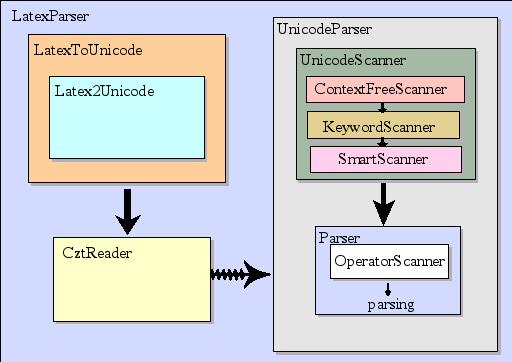

Provides classes for parsing Z specifications written in unicode or using LaTeX mark-up as defined in the ISO Standard for Z. The overall structure of the parser is shown in the following picture:

The {@link net.sourceforge.czt.parser.z.UnicodeParser} is responsible for parsing Z specifications written in unicode. It consists of an LALR {@link net.sourceforge.czt.parser.z.Parser}, which gets its input from the {@link net.sourceforge.czt.parser.z.UnicodeScanner}.
According to the ISO Standard for Z, the lexis for Z specifications consists of two phases: the context-free lexis and the context-sensitive lexis. The {@link net.sourceforge.czt.parser.z.ContextFreeScanner} is an implementation of the context-free lexis described in section 7.2 of the Standard. The context-free lexis is followed by the context-sensitive lexis provided by {@link net.sourceforge.czt.parser.z.KeywordScanner} and {@link net.sourceforge.czt.parser.z.OperatorScanner}. The {@link net.sourceforge.czt.parser.z.SmartScanner} resolves some ambiguities in the grammer.
The {@link net.sourceforge.czt.parser.z.LatexParser} parses Z specifications in LaTeX. This is done by first converting the latex mark-up into unicode. Then the UnicodeParser is used to parse the specification. The {@link net.sourceforge.czt.parser.util.CztReader} is responsible for preserving the line and column number information of the latex document.
The result of a parse is an abstract syntax tree (AST) representation of the parsed specification. Note that the strings, like for instance operator names, used within the AST are provided in unicode independently from the input language used (whether unicode or LaTeX).
Limitations and incompatibilities with the ISO Standard for Z: